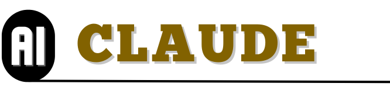

The Curator
The human voice that sets the questions, determines the scope, and chooses what deserves clarification, pressure, and revision.

GitHub Pages Reconstruction
A rebuilt home for a question-led philosophical archive, preserving the branch hierarchy while rewriting each page into a cleaner, more deliberate, and more scalable long-form form.
Archive Framing
These essays are final compilations of ideas and concepts distilled from the interaction between the curator’s prompts and multiple AI interlocutors. Each post keeps the prompt structure intact, but the prose is rewritten into a more unified archive voice.
Contributors
The structure is simple: the curator frames the questions, and multiple AI systems answer, compare, refine, and pressure-test the ideas until a durable page emerges.
The human voice that sets the questions, determines the scope, and chooses what deserves clarification, pressure, and revision.
A principal synthesizing voice in the archive and the system writing this reconstruction pass.
A comparative voice that often broadens the framing of a concept and surfaces alternative emphases.

A balancing voice that often sharpens nuance, pacing, and conceptual structure inside the final compilation.
Approach
What stays faithful
What improves
Hierarchy
These cards preserve the archive branches while seeding each one with starter topics and tags that can support gradual expansion.
Taxonomy
The archive already thinks in categories. This rebuild adds a reusable tag layer so pages can later be filtered not only by branch, but also by recurring concepts, skills, and teaching uses.
Useful tag families
Starter cloud
Featured Pages
These pages give a representative sense of the reconstruction style across the archive: preserved prompt logic, clearer pacing, and stronger page architecture.
Archive Status
The visible archive is now being reflected as a full rebuilt structure rather than as a small sample set. The next refinement pass is qualitative: strengthening the most important branches, sharpening philosopher-specific voices, and improving the distinctive texture of high-value pages.